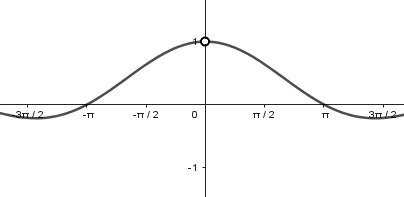
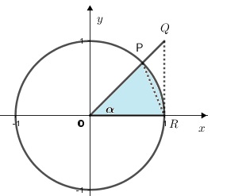
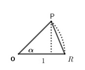
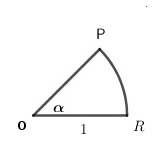
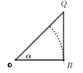

Considere la función $f(x)=\dfrac{\text{sen}(x)}{x}$. Note que $f$ no está definida en $x=0$, sin embargo si analizamos la función cuando $x\rightarrow 0$, podemos notar que la función tiende a 1. Observe algunos valores numéricos de la función en la siguiente tabla:
$$\begin{array}{|l|l|l|l|l|l|l|}\hline -0.001 & -0.01 & -0.1 & x\rightarrow 0& 0.1 & 0.01& -0.01\\ \hline
0.999999 & 0.999983 & 0.998334 & f(x)& 0.998334& 0.999983 & 0.999999\\ \hline \end{array}$$
Si se consideran los resultados mostrados en la tabla, se puede conjeturar que el límite de la función $f(x)=\dfrac{\text{sen}(x)}{x}$ cuando esta tiende a cero es 1. En la figura 5, se aprecia la gráfica de la función.

Figura 5. $f(x)=\dfrac{\text{sen}(x)}{x}$
Ahora utilizaremos el teorema de la compresión para demostrar que efectivamente $\displaystyle{\lim_{x \to 0}\dfrac{\text{sen}(x)}{x}}=1$.
Considere un círculo de radio 1 y el ángulo central como se muestra en la figura 6a) y la región $OPR$ un sector del círulo con ángulo central $\alpha$ tal que $0<\alpha <\dfrac{\pi}{2}$.
Note que, área de $\vartriangle OPR\leq$ área de sector $\vartriangle OPR \leq$ área de $\vartriangle OQR$
|  |  |  |  |
| Figura 6a). Circunferencia unitaria | Figura 6b). Triángulo OPR | Figura 6c). Sector OPR | Figura 6d). Triángulo rectángulo OQR |
De acuerdo con la figura 6b), la altura de $\vartriangle OPR$ es $\overline{OP}\cdot \text{sen}(\alpha)=1\cdot \text{sen}(\alpha)=\text{sen}(\alpha)$, luego
área de $\vartriangle OPR=\dfrac{1}{2}\overline{OR}\cdot altura=\dfrac{1}{2}\cdot 1 \cdot \text{sen}(\alpha) =\dfrac{1}{2}\text{sen}(\alpha) $ (1)
Y de acuerdo con la figura 6d) $\tan(\alpha)=\dfrac{\overline{QR}}{\overline{OR}} \Rightarrow \overline{QR} = \tan(\alpha)$ de forma tal que:
área $\vartriangle OQR=\dfrac{1}{2}\overline{OR}\cdot \overline{QR}=\dfrac{1}{2}\cdot 1\cdot \tan(\alpha)=\dfrac{1}{2} \tan(\alpha)$. (2)
Finalmete área de sector $OPR$:
$OPR=\dfrac{1}{2}\cdot 1^2\cdot \alpha=\dfrac{1}{2}\alpha$ (3)
Por (1), (2) y (3), se tiene que
$\dfrac{1}{2}\text{sen}(\alpha)<\dfrac{1}{2}\alpha<\dfrac{1}{2}\tan(\alpha)$
Luego, multiplicando por $\displaystyle \frac{2}{\text{sen} \alpha}$ se obtiene
$1<\dfrac{\alpha}{\text{sen}(\alpha)}<\dfrac{1}{\cos(\alpha)}$
Y finalmente, invirtiendo las desigualdades se tiene
$\cos(\alpha)<\dfrac{\text{sen}(\alpha)}{\alpha}<1$.
Ahora, considerando $\alpha\rightarrow 0^+$ en el último resultado, puesto que $\dfrac{\text{sen}(\alpha)}{\alpha}$ está comprimida entre 1 y $\cos(\alpha)$, el cual tiende a 1:
$$\displaystyle{\lim_{\alpha \to 0}\dfrac{\text{sen}(\alpha)}{\alpha}}=1$$
Se obtiene el mismo resultado en el caso \(-\dfrac{\pi}{2}<\alpha<0\) cuando \( (\alpha\rightarrow 0^-)\)
Se invita al lector a investigar sobre la demostración del límite $\displaystyle \lim_{x\to 0} \frac{1-\cos x}{x}=0$.